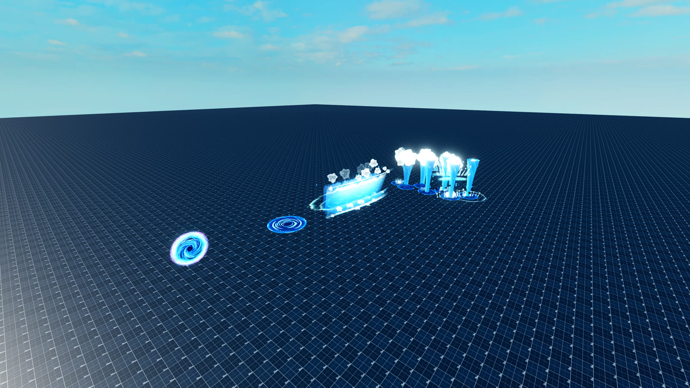
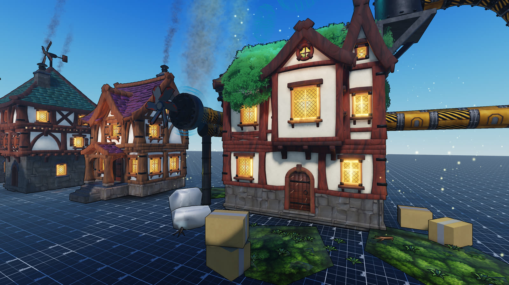

Movement system
A client-side controller that replaces Roblox's instant start, stop and turn with momentum and weight, then drives motion-capture animation from the character's real speed.
Click the floor, then move with WASD or the arrow keys. Hold Shift to sprint, X to walk, C to crouch. On touch, hold a finger where you want to go. The blue line is the predicted path, the same one the game draws in Studio.
Weighted steering
The character turns toward the stick at up to 240° a second and builds to speed over about 0.85 seconds. Sharp turns cost speed, and braking is capped so a sprint takes a couple of planted steps to stop instead of snapping to zero.
Animation that matches the feet
Idle, walk, jog and sprint loops are blended by measured ground speed. Every moving clip shares one gait phase, offset so the left heel lands at the same moment in each, so changing pace never pops the feet. Stop clips enter at the frame that best matches the current stride.
Mocap drives the body
Start and stop clips carry their recorded speed curves, and the controller follows them, so the body accelerates exactly as the capture did. Raw hip speed wobbles with each step, so the curves are smoothed to rise or fall in one motion.
Jumps, landings and lean
Jumps have a short takeoff before leaving the ground and limited air control. Hard landings slow the character briefly, and a sprint jump recovers to full speed over 1.5 seconds. The torso banks into turns and rocks back onto the heels when braking, up to 7°.
Every input, every edge case
Keyboard, gamepad and touch all work, keeping analog stick strength. Sprint and crouch toggle on stick clicks. Menus, text boxes and lost window focus cancel held modes, and slows from other systems are respected as a speed cap.
local function rotateToward(from, target, dt, maxRate)
local angle = math.atan2(from:Cross(target).Y,
math.clamp(from:Dot(target), -1, 1))
local change = math.clamp(
angle * (1 - math.exp(-dt / number("TurnResponse", 0.16, 0.03, 0.6))),
-maxRate * dt, maxRate * dt)
return CFrame.fromAxisAngle(Vector3.yAxis, change)
:VectorToWorldSpace(from), change
endlocal braking = not stopSpeed and desired < speed - 0.5
and not crouchLimit
local eased = speed + (desired - speed) * (1 - math.exp(-dt / response))
if braking then
speed = math.max(eased,
speed - number("BrakeDeceleration", 30, 5, 200) * dt)
else
speed = eased
endlocal base = l.len * phaseVel
local want = wrap(self.phase + l.offset) * l.len
local err = want - l.track.TimePosition
if err > l.len/2 then err -= l.len
elseif err < -l.len/2 then err += l.len end
if math.abs(err) > l.len * .08 then
l.track.TimePosition = want -- far off: snap
l.track:AdjustSpeed(base)
else
l.track:AdjustSpeed(math.max(0, base + err * 6)) -- close: steer
end| Mode | Key | Speed (studs/s) |
|---|---|---|
| Sprint | Shift or L3 | 18.0 |
| Jog | Default | 11.9 |
| Walk | X | 4.4 |
| Crouch | C or R3 | 3.4 |
Water ability VFX
Stylized water effects for player abilities, built and tuned in a dedicated test place before they go into the game.

World-building
Humanity's technology turned against it, and nature has taken the ruins back. The look is 1850s Britain with obsolete, half-reclaimed tech.

Item prompts
Custom pickup prompts that replace Roblox's default prompt with a card showing the item, its class, quantity and rarity. This UI is a work in progress, so the design will change.
The items here are examples. In game, each prompt reads them from values stored on the prompt.
One prompt, any item
The card is cloned for each prompt in range and filled from values on the prompt: item name, class, quantity, description and rarity. Designers tag an item once and the UI follows.
Rarity you can read at a glance
Five rarities each set the card's color. Legendary items switch to a display font with a gold gradient. Cursed items get a violet gradient and scramble their text before revealing a message.
Feedback on pickup
Triggering the prompt collapses the card and fades the text out, then it eases back when released. Connections are cleaned up when the prompt leaves view.
ProximityPromptService.PromptShown:Connect(function(prompt, inputType)
if prompt.Style == Enum.ProximityPromptStyle.Default then
return
end
prompt.MaxActivationDistance = 40
local gui = getScreenGui()
local cleanupFunction = createPrompt(prompt, inputType, gui)
prompt.PromptHidden:Wait()
cleanupFunction()
end)